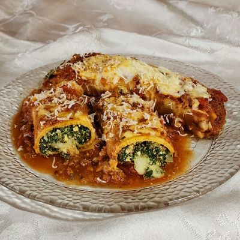

Ingredientes
- 500gr Carne Picada
- 1 paq. Acelga
- 1 paq. Espinaca
- 2 Cebollas
- ½ Pimiento Rojo
- 2 dientes de Ajo
- 12 panqueques
- Sal, pimenton dulce, aji y oregano
Instrucciones
- Cocinamos la acelga y la espinaca por 5 min. Puede ser hirviendolas, con una vaporera
(ideal)o salteando las hojas en una olla/sarten. Luego la escurrimos y reservamos. Yo las hiervo.
- Cortamos en cubos la cebolla, el pimiento y picamos el ajo.
- En una olla con un chorro de aceite, la llevamos a fuego medio y sofreimos la verdura que cortamos.
- Cuando la cebolla esté transparente, subimos el fuego agregamos la carne picada, los condimentos y revolvemos hasta que la carne quede sellada.
- Bajamos el fuego y a los verdes que ya se encuentra cocido y escurrido, los picamos un poco e incorporamos a la olla. Tapamos y dejamos cocinar por 20min.
- Apagamos la cocina, y dejamos enfriar el relleno. Una vez frio, rellenamos los panqueues y los acomodamos en una placa.
- Precalentamos el horno a 200°, le ponemos un poco de salsa de tuco o bolognesa encima y lo mandamos al horno por unos 8mins.
- Sacamos del horno, servimos con una espatula, un poco de queso rallado y voilá!